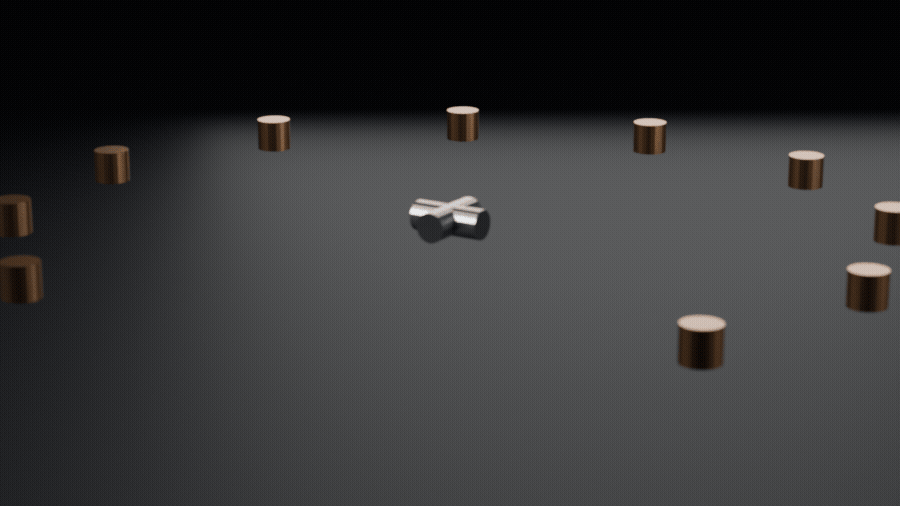

Blender 5.1.1 reportMechanical gimbal turntable
A 24-part assembly built from nothing, lit, then rendered as a seamless 48-frame loop — no human in the loop after launch.
frames 48render 80.2 serrors 0
Read the full report →